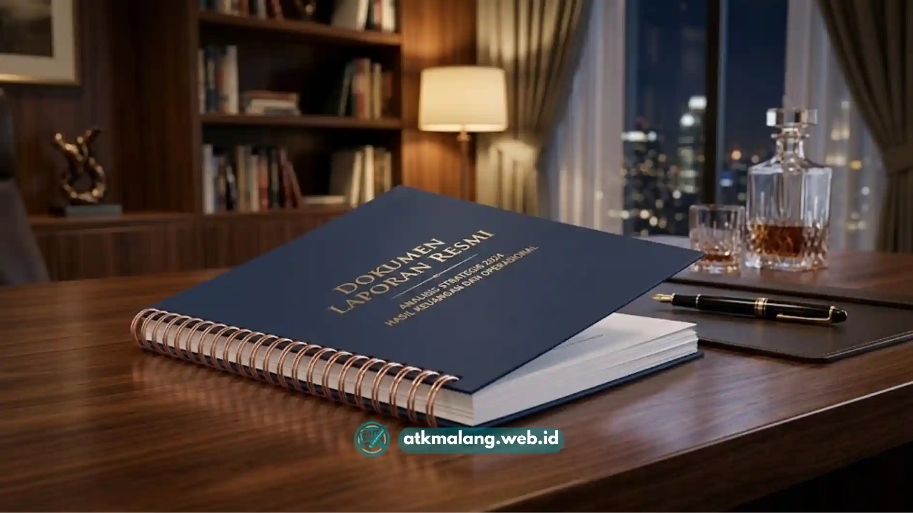

Perbedaan jilid spiral kawat vs plastik terletak pada bahan ring, tingkat ketahanan, tampilan akhir, dan kemudahan membongkar dokumen setelah dijilid.
- Spiral kawat terbuat dari logam berlapis, sedangkan spiral plastik terbuat dari PVC.
- Spiral kawat lebih kokoh dan tahan lama, spiral plastik lebih fleksibel dan mudah dilepas-pasang.
- Tampilan spiral kawat cenderung lebih formal, spiral plastik lebih variatif dari segi warna.
- Biaya spiral plastik umumnya lebih terjangkau dibanding spiral kawat.
- Pemilihan Alat Tulis Kantor ini tergantung tujuan penggunaan dokumen, bukan sekadar harga.
Daftar Isi
Apa yang Membedakan Bahan Ring Kawat dan Plastik?
Ring kawat terbuat dari logam berlapis warna, sedangkan ring plastik terbuat dari bahan PVC yang lebih lentur.
Ring kawat biasanya berbentuk huruf O ganda yang dipress rapat setelah dipasang ke lubang kertas, membuatnya sulit dibuka kembali tanpa alat khusus.
Ring plastik berbentuk spiral ulir yang diputar masuk ke lubang kertas, sehingga bisa dibuka dan ditutup berulang kali dengan tangan.
Mana yang Lebih Tahan Lama, Kawat atau Plastik?
Secara umum, ring kawat lebih tahan lama dibanding ring plastik karena bahan logam lebih kuat menahan tekanan dan tidak mudah retak.
Ring plastik dapat menjadi getas jika sering terkena panas berlebih, ditekuk tajam berulang kali, atau disimpan dalam waktu lama pada kondisi lembap.
Ring kawat cenderung lebih stabil terhadap kondisi tersebut, sehingga sering dipilih untuk dokumen arsip jangka panjang.

Tampilan dokumen dengan jilid kawat memberikan kesan lebih formal dan profesional.Mana yang Lebih Murah dan Praktis Digunakan?
Ring plastik umumnya lebih murah dan lebih praktis untuk dokumen yang sering direvisi, sedangkan ring kawat lebih cocok untuk dokumen final yang tidak akan diubah lagi.
Dari segi biaya, ring plastik biasanya dibanderol lebih rendah karena bahan baku dan proses produksinya lebih sederhana dibanding ring kawat berlapis logam.
Dari segi kepraktisan, ring plastik unggul karena bisa dibuka-tutup tanpa alat tambahan, cocok untuk dokumen kerja yang halamannya sering berubah.
Kapan Sebaiknya Memilih Spiral Kawat?
Spiral kawat sebaiknya dipilih ketika dokumen memerlukan tampilan formal, akan disimpan dalam waktu lama, atau tidak akan direvisi lagi.
- Dokumen resmi perusahaan atau instansi
- Katalog produk yang dicetak dalam jumlah banyak
- Buku manual atau panduan yang bersifat final
- Dokumen yang akan diarsipkan dalam jangka Panjang
Kapan Sebaiknya Memilih Spiral Plastik?
Spiral plastik sebaiknya dipilih ketika dokumen bersifat sementara, sering direvisi, atau anggaran menjadi pertimbangan utama.
- Laporan tugas kuliah atau laporan magang
- Draft proposal sebelum versi final
- Modul pelatihan internal yang mungkin diperbarui
- Dokumen kerja harian dengan volume cetak menengah
Perbedaan utama jilid spiral kawat dan plastik ada pada ketahanan bahan, tampilan, dan kepraktisan pembongkaran dokumen.
Spiral kawat lebih cocok untuk dokumen final dan formal, sementara spiral plastik lebih sesuai untuk dokumen kerja yang fleksibel dan sering direvisi.